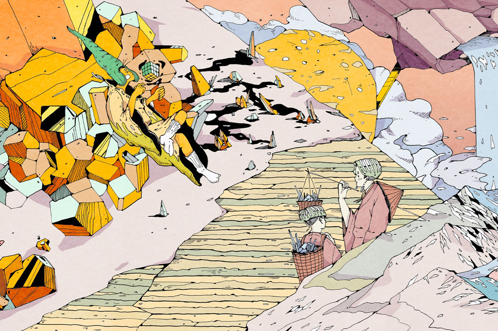

首頁
吹糖人
傳統紙紮
手工木屐
關於我們
相關連結
電子書
國立傳統藝術中心
促進「文創加值」、「文化創價」，使文化資本轉化為文化資產，並進一步將臺灣傳統表演藝術推向國際舞臺
傳統工藝數位博物館
因應時代需求，秉持著對傳統藝術保存盡心，對技藝傳承盡力的原則，除戮力於民間藝術的保存與傳習外，亦蒐藏流傳於臺灣的工藝技藝及具有特殊工藝價值或歷史年代的精緻工藝品。
文化銀行
文化銀行不僅留存記憶的圖像及形體，更要發揮人文思考的價值，使文化並不只是靜靜被欣賞的對象，更能以生動面貌重新活在世人的生活中

文化部文化資產局
除了與地方政府合作，共同保存維護全國文化資產外，將持續透過文化資產保存之多元化、專業化、參與制度化、觀念普及化及永續發展等策略，逐步建立文化資產保存的新視野